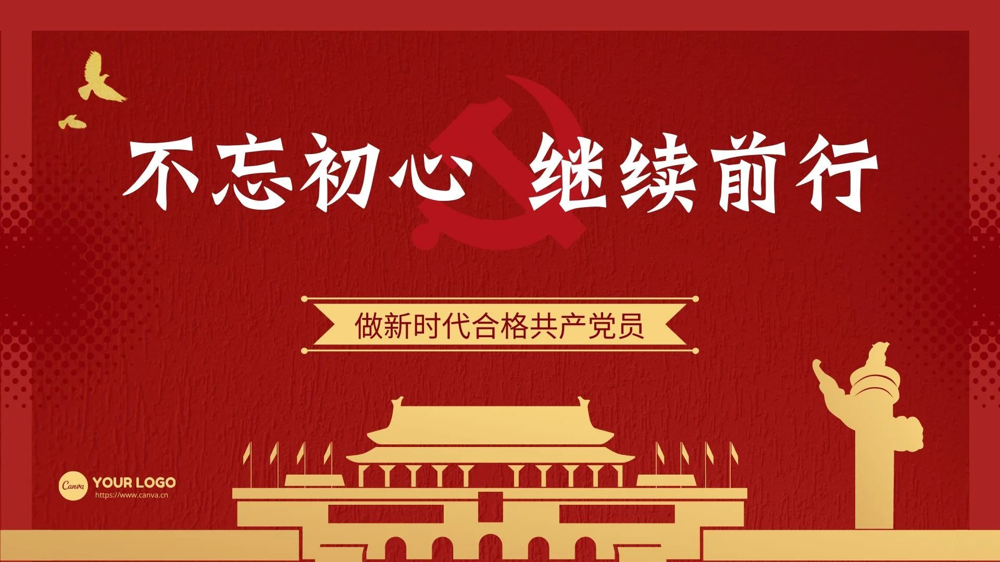
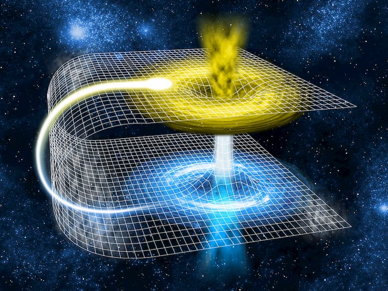
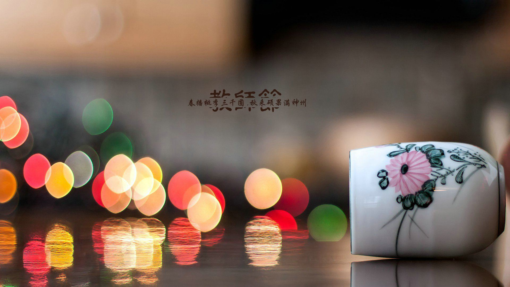
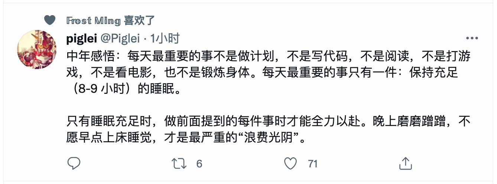
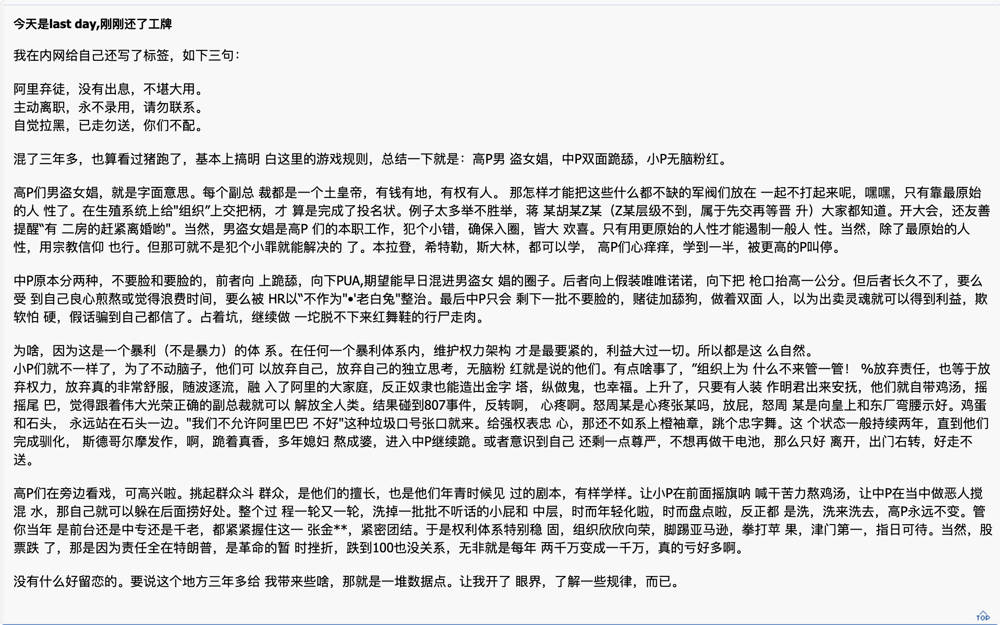

2021 年第三季度总结
这里记录下第三季度自己的一些想法，为了日后翻阅方便！
- 七月
- 读书真正的目的在哪里
- 如果做到认真对待工作
- 变化的学习知识方式
- 何必因为琐事而烦忧
- 八月
- 最简单的学习往往最无效
- 渐渐消失的普通人物
- 所以到底要不要读研
- 九月
- 睡眠保证疲劳值
- 工作晋升制度
- 阿里员工的离职贴
- 网络暴力下的伤害与被伤害
七月
中国共产党诞生纪念日，又称建党节。
一百年前，中国共产党的先驱们创建了中国共产党，形成了坚持真理、坚守理想，践行初心、担当使命，不怕牺牲、英勇斗争，对党忠诚、不负人民的伟大建党精神，这是中国共产党的精神之源。一百年来，中国共产党弘扬伟大建党精神，在长期奋斗中构建起中国共产党人的精神谱系，锤炼出鲜明的政治品格。历史川流不息，精神代代相传。我们要继续弘扬光荣传统、赓续红色血脉，永远把伟大建党精神继承下去、发扬光大。

一 读书真正的目的在哪里
有些事情需要思考，有些事情需要记住，有些事情需要进步！
今天回家路上听了《先看评测》的一个关于电纸书的横评视频，主要讲的是，市面上 1500 以下的几款电子水墨屏电子书的优缺点，以及最后的推荐购买指南。这突然让我重新思考读书的本质是什么呢？我又开始问自己这样一个问题！
当初为了买一个 kindle 而神吃俭用，结果没过多次时间，发现竟然变成了泡面的盖板。用现在流行的一个梗表述，就是要买的已经买了，买了的已经在吃灰了，吃灰了的可能现在正在刷盖泡面了。当时，为了读书，心中升腾而起的读书冲动，心里想着，我要是有一个 kindle，那我岂不天天在看书。但是，随着冲动的激流而过的，还有我们的读书热情，久而久之，我们就习惯于忘记了原来闲暇之余可以看看书。
我们其实有很多理由来购买电纸书，比如我花了这么多钱买电纸书就可以多读书，比如电纸书没有微信和抖音可以让我们更专注，比如电纸书更接近于纸质书看起来眼睛更加舒服，比如搬家不想买书而电纸书更加便携，等等理由。但是，这里面更应该分清楚的是，究竟什么才能够鼓励你，放下手机，打开一本书，认真地把它读完。
是买了就一定要好好读书的决心，还是微信读书里面好友的排名，我们需要了解自己并找到如何不断激励自己不断读书的方式，远比你弄清楚那个电纸书值得购买更加重要。以下是视频里面的相关总结，可以参考进行选购：
- 不建议购买任何彩色电子墨水屏产品
- 阅读文字建议购买
300ppi的电纸书，字体清晰没有锯齿感 - 观看漫画，显示效果最好的是
kindle，其次是文石、小米、博阅 - 实体书的资源，亚马逊是数量最多的，单价最低的，购买体验最好的，甚至支持
7天无理由退货 - 微信读书的无限卡性价比很高，可以尝试使用它的电子墨水屏版本
- 介意电纸书闪屏或者刷新慢，可以考虑有快速刷新模式的电纸书，效果最好的是文石
二 如果做到认真对待工作 - 转载
有些事情需要思考，有些事情需要记住，有些事情需要进步！
xintao 最近分享了一篇博客，讲述自己维护了一个异常报错很多但服务正常可用的服务，然后一步一步解决很多内部错误的过程。我看完之后，感觉挺有感慨的，所以打算在这里记录下：
- [1] 发现问题
- 维护了一个每分钟要处理上千万(
RPC)的请求Service Mesh系统(类似于Istio服务) - 系统自从接手之后每时每刻都在报出来很多内部错误，比如发生内部超时，路由信息找不到，等等
- 每分钟有上万个错误，然而系统的运行是完全正常的
- 到底是
Oitsi服务真出了问题，还是属于正常的错误呢 => 容易掩盖了很多真实的问题 - 基于这样的监控数据我们也无法设置告警，因为这些噪音太多了，即使有告警，也和没有一样
- 后来发现，很多告警的规则本身就有问题 =>
KPI - 告警发出来，大家打开监控，盯着监控：在等等看，看下一分钟，有请求进来了，服务没问题
- 我有一个想法，就是在源头解决问题比使用高级的魔法系统去解决问题要简单、彻底很多
- 比如监控配置的不对，那就优化监控；配置的不对？不能基于历史的监控数据配置告警？
- 维护了一个每分钟要处理上千万(
- [2] 解决问题
- 于是，我决定从源头去解决这些问题，把所有不应该报告出来的错误都消灭掉
- 虽然是性价比非常低的工作，做一点错误就少一些，为了自己和他人方便
- 建立一个可以追踪任务和记录相关问题的地方，可以方便回溯和整理相关问题和责任人
- 有问题找开发修复问题，给出修复的时间点，之后进行确认和验证
- 等所有的问题都解决了的话，对错误设置告警，一有错误就去联系开发
- 找人解决问题，之前最好做到有理有据，摆事实(日志)讲道理
- 很多错误一下子就消失了，非常有成就感，可以预见到在不远的未来，将会成为一个零错误的系统
- [3] 总结问题
- 从源头解决问题最彻底
- 不要害怕沟通
- 错误的发生都有原因，排查下去，零就是零，一就是一
- 每个公司都有脏活，累活，这些都需要有人去做
说真心话，挺佩服的，尤其是最后一句话：每个公司都有脏活，累活，这些都需要有人去做。但凡有个三年五载工作经验的人，都知道跳槽并不是解决问题的方式和手段，有可能下家公司正在挖一个大坑等着你呢！如果你在现在这个公司，发现有很多问题(纯工作上的问题)，每天干呀干感觉没有一个头。这个时候，你就应该思考，如何改进或者调整呢？即便是脏活，累活，你一直不去推送和优化的话，它始终是阻挡你进步的绊脚石！
三 变化的学习知识方式
有些事情需要思考，有些事情需要记住，有些事情需要进步！
相对于观看视频来说，很多人更喜欢选择读书来扩充自己的知识边界。
书籍有很多优点，比如只要随手一翻就知道哪些章节是自己需要看的，比如读到精彩之处可以停下来慢慢琢磨和消化，比如相对于电子产品来说读纸质书对眼睛更好。当然，电子书或电纸书也是有其独特的优点的，详情可以参考上面《读书真正的目的在哪里》这一节。
但是还是有很多人会选择看视频，也不是读书。我认为真正的原因在于，看视频对应新手入门来说很友好，虽然读书的学习效率比较高。
人类学习效率最高的方式，不是 读书 + 思考，而是 观察 + 模仿。 前者需要较长时间的注意力投入，后者只需要短时间注意力，更符合人类的天性。有些知识，读书读半天也不一定明白，但是亲眼看别人做一遍，马上就能懂。即使不完全懂，至少知道怎么模仿，之后再看书或者思考起来才会更加得心易手。人们更容易接受形象的东西，而不是抽象的文字。
而且，今时不同往日了，自媒体和各种相关的视频层出不穷，不一定你看的这个视频就是最好的(当然，还是要选择相对较好的视频进行观看，不然费时和费力，最好反而不出东西)，但是最起码可以入个门。我们已经进了视频学习的时代，视频网站可能是新时代的图书馆和印刷机。
四 何必因为琐事而烦忧
有些事情需要思考，有些事情需要记住，有些事情需要进步！
天文学上，黑洞是一个很热门的概念，指的是一个具有巨大引力的星体，可以吸收周围的物质，连光也可以吸收。由于不会产生光，所以无法被看到，因此称为黑洞。此外，还有一种星体叫做白洞，正好与黑洞相反。黑洞是将物质吸进去，由外向内；白洞则是将物质排斥出来，由内向外，所有的物质都向外喷发。有人认为，许多 X 射线暴和 γ 射线暴正是由白洞造成的。
现在让我们设想，一个黑洞的对面正好有一个白洞，它们连在一起。周围的物质被不停地吸入黑洞，由于黑洞的背后是一个白洞，白洞会不停地从黑洞中把物质抽出来，再喷发出去。这里最关键的部位是黑洞和白洞之间的衔接口，给黑洞命名的约翰·惠勒想出了一个新名词，把它叫作”虫洞”，像蛀虫在黑洞和白洞之间蛀的洞。所以，虫洞只是一个通道而已，那里并不存放任何物质。

进一步探究虫洞的物理性质，科学家发现了虫洞还有更大的潜在功能。它不仅能够衔接黑洞和白洞，而且还可以把两个毫无关联的宇宙世界连起来。广而言之，我们的宇宙就是一个大黑洞，外界看不到我们，我们也看不到外界。现在，可以用虫洞来沟通，相当于在两个宇宙之间搭了一条隧道。这个隧道把两个宇宙的时空连接起来，因此又被称为 时空隧道。
我们不能认为地球上的人类是宇宙中唯一的高等智慧生命。同样，我们的宇宙也不应该是唯一的宇宙。在我们的宇宙之外，应该存在着一个超级大宇宙。如果把每个宇宙比作一个球泡，会有无数球泡飘浮在超级大宇宙中。根据以往的理论，一个个宇宙泡之间完全隔绝。而现在，只要通过时空隧道，一个宇宙中的人类就可以到另一个宇宙中去访问。
相对于上述天文学的无尽脑洞相比，生活中的琐事和问题都已经不成问题了。而为什么我们会常常深陷于其中，主要原因是因为它们对于普通人来说还是非常非常遥远的事情，这些时间也不是他们需要考虑的，这就留给科学家吧！但是，仔细想想，这是多么一件令人好奇和充满无尽遐想的事情呀！所以，保持一颗童心，保持对应未来的向往还是非常重要的。
八月
迢迢牵牛星，皎皎河汉女。
在晴朗的夏秋之夜，天上繁星闪耀，一道白茫茫的银河横贯南北，争河的东西两岸，各有一颗闪亮的星星，隔河相望，遥遥相对，那就是牵牛星和织女星。
一 最简单的学习往往最无效 - 转载
有些事情需要思考，有些事情需要记住，有些事情需要进步！
在学生时代，每个班或者每个年级，都有这样几个人，上课几乎不做笔记，甚至书上都是干干净净的，但是最后的考试成绩非常好。反观，有些同学上课非常的认真，笔记也做得非常好，让你都有种想要夸赞的程度，但是考试成绩并没有那么理想。我在上学的时候，大概就属于后者了，做了很多无用工。
- [1] 那些没有效果的努力
- 排除智力因素之外，同样记忆一些知识点(背英语单词等)，反复去看和阅读，并进行一些集中练习。但其实，这些并没有抓住本质，反而可能还是效率最低的学习方式。因为这个单词或知识点，我们只是在大声阅读、拼写而已，这种行为其实可以归为一种不花力气的学习，这个学习过程并没有给大脑带来什么挑战，这种记忆效率往往并不理想，而且就算当时记住了，那也会很快忘记了。
- 耗费心血的学习才是深层次的，效果也会更持久，不花力气的学习就像在沙子上写字，今天写上，明天字就消失了。其实我之前其实也很多时候也用刚才说的模式来学习。比如背单词的时候我就反复拼好多遍、读好多遍，而很少主动去默写，去联想记忆，去做自测等等。所以，大部分时间，我的其实就是反复机械式地向大脑灌输一些强化的信息，最后的结果就是，很多单词和知识点，我当时从 0 到记忆住一个知识点的过程比较漫长，而且后来绝大多数知识点也都很快忘记了。
- [2] 我印象深刻的知识是怎么来的
- 现在能够回忆起的知识，都是通过反复练习及不断训练得到的知识，大脑经历了反复几次有挑战性的任务，触发了一些主动的思考和联想，然后没有记住的知识点再进行更有针对性的记忆。经过反复的几次提问，大脑的思考，知识的检索，这几个知识点就在我脑海中的印象变得更加深刻。所以，耗费心血、对大脑有挑战性的学习才是深层次的，这个过程往往伴随着大脑对信息的主动检索，效果也会更好。
- [3] 什么才是有效的学习
- 记忆一个知识点或者背单词的时候，可以尝试让自己不看书本复述或默写出来，对大脑带来一些挑战。
- 读一本书，可以尝试拿出一张纸或者打卡一个空的思维导图，让大脑把整体的思维脉络、核心内容梳理出来。
- 看了一篇讲座或者学习了一个课，最有效的学习和记忆手段往往是把读后感或者总结写出来。
人天性是懒惰的，学习的过程中，大脑跟着一起懒惰，去机械式地学习往往是不可取的。所以，总的来说，我们在学习的时候不要死板地反复阅读，可以尽量给大脑一些有挑战性的工作，比如尝试默写、复述、思考和梳理等等，让大脑主动去检索和记忆，如果发现想不起来，那我们也知道哪部分内容需要重点学习的内容。只有这样，才是学习和记忆的正确方式。
二 渐渐消失的普通人物 - 转载
有些事情需要思考，有些事情需要记住，有些事情需要进步！
而最近十年时间的电视剧，大都是以网剧形式出现在大众的视野里面(上班族)。现在的很多打工人，租住的房子里面是没有电视的，导致不少人看剧，只能够上视频网站。视频网站逐渐取代了电视台，成为了电视剧的主要出口。和电视台相比，视频平台更加看重流量导向，流量就是钱。
华东师范大学老师毛尖说过这样一句话，就是“影视剧就是全中国最封建的地方，永远都是按地位、按财富来分配颜值，按颜值来分配道德和未来”。可以看到，普通人正在失去话语权，穷人正在被污名化。老一辈的电视剧中，可以看到很多都是以普通百姓为主角，描写家里和邻居那些鸡毛蒜皮的琐事，用幽默寓言的方式展现正式的市井人性，但是同时也会展现出，普通人面对命运的捉弄是如何支棱起来的。深入到广大人民群众的电视剧，才能够成为经久不衰的经典之作。
最关键的是，观众们似乎已经沉浸在电视剧编造的玄幻世界里面了，主角他们什么都有，即便是遇到了问题和困难，也很快可以考能力去解决。观众一旦把自己带入进去，会带来种种便利以及畅所无阻的成功人生。这就是爽文变成了电视剧，变成了爽剧。
此外还有一个更为真实的原因，那就是大家不愿意去承受更多压力了。相比较起来现在普通人的生活充满了焦虑，如果在电视剧里面在看到各种内卷，感觉就像是在照镜子辱骂自己一样。大多数人并不想在自己为数不多的娱乐时间里面，看一些让自己更难受的东西。爽剧在一集甚至十几分钟内就可以解决问题，而且实现反转。以前一块糖的快感，现在需要喝下一整罐的可乐才可以获得快乐，因为大家的快感耐受了。如今的爽剧和爽文当道，可以说是当代人消极态度和强烈欲望并存，而催生的一种文化现象。于是我们的电视里面，只剩下高高在上的精英和霸道总裁了。
生活已经这么苦了，我们当然无法拒绝爽剧，甚至是一分钟反转三次的土味小短剧。毕竟普通人的日常生活中，快乐的时候真的很少了，但是偶尔在某一些时候，你会不会也想看一些爽剧之外的电视剧呢？
- 这世界有太多不如意
- 但你的生活还是要继续
- 太阳每天依旧要升起
- 希望永远种在你心里
三 所以到底要不要读研 - 转载
有些事情需要思考，有些事情需要记住，有些事情需要进步！
在 telegram 群里，看到有人在讨论快毕业后要不要考研的问题，随后有人在群里抛了一个链接，就是上面标题里面的这个。虽然我不考研，但是我看了下，写的挺好的，所以在这里分享下。
V2上关于读研与否的讨论真的是生生不息，估计有的人不喜欢看长文，那我直接给个结论：对于工作三年跳槽进不了大厂的，就算读了研(特指在中国境内读三年制硕士研究生)，一样进不去。我对读研怎么看？用一句话概括就是：如果你明确知道读研就是达到既定目标过程中所缺失的那个条件，那就去读，否则不要读。在展开讨论之前，我必须先讲一个致命的思维盲区：权衡要不要做某件事的时候，只看到做这件事的收益，而完全不考虑因此导致无法做别的事所造成的损失。一个人要判断的，不是读研带来了多少收益，而是读研和其它选择哪个收益更大，这才是正确的思考方式。
归纳起来还是最开始说的：如果你明确知道读研就是达到既定目标过程中所缺失的那个条件，那就去读。然而，大部分人连目标都不确定，只不过是把读研当做一种改变命运的美好幻想罢了。
不过相信大家也发现了一些共性，就是这种盲目推崇读研的人，往往对很多问题都缺乏基本了解，看问题也非常片面。我暗自揣测，他们中大部分可能并没有真正读过研究生，却又把自己目前的不如意归咎于没有读研，并幻想出了所谓读研之后的美好生活。总之呢，读研这件事好不好，各人有各人的情况。对想进互联网行业的同学，可能确实是浪费时间，但若是想去考公务员或者拿户口，可能又很必要。关键还是要清楚自己的目标，分析自身情况，再来判断读研到底是不是一个好的选择。
是的，上面这个说的是关于 考研 的一些观点，但是对于我们生活中出现的其他事情也是可以，推至及理的。比如，买某个东西之前，我们可能会犹豫不定，不知道是应该现在该买呢还是后续再说。这个时候，我们就应该思考，这件东西是否使我们生活必须的呢？如果必须的话，那肯定得买，下来就考虑去哪里买最为划算了。如果并没必须，但是可以增加生活品质，在条件允许的情况也是可以买的。如果并非必须且可有可无的，买了之后大概会沦为：买前生产力，买后爱奇艺！
九月
教师节，旨在肯定教师为教育事业所做的贡献。
三尺讲台，将知识演绎，美丽的人生您来开启；短短粉笔，将智慧启迪，成功的道路您来铺就；学生是树，您就是雨；将无限的能量供给，却默默奉献着自己。

一 睡眠保证疲劳值
有些事情需要思考，有些事情需要记住，有些事情需要进步！
在推上面，看到 pig磊 发了一个动态，说：人到中年，每天最重要的只有一件事情，那就是保持充足(8-9h)的睡眠。只有充足的睡眠，才能在做事的时候全力以赴。晚上磨磨蹭蹭，不愿意早点上床休息，才是最为严重的浪费时间。

我也从学校毕业，工作了好几年了，确实随着年龄的增长，能够让我感觉到是这么一个道理。就好像是打网络游戏一样，玩家扮演的角色都会存在疲劳值，就是当时间到达一定上限的时候，会被强制要求休息以便恢复消耗的疲劳值，其实人也是存在疲劳值的。当我们忙碌一早上之后，到中午吃完饭的时候，明显能够感觉需要休息一会儿。这就是告诉我们，我们的疲劳值不够，需要及时补充疲劳值。而如何补充批量值呢？就是睡眠，需要充足的睡眠！
- 也许，我们终将记起白天真正清醒的感觉，充分而深刻地感受充实的生活！—— 《我们为什么睡觉》
- 看了那么多次医生，吃了那么多药，结果还是辞职对身体健康最有效。——
fubuki_pix
孩童的时候，从感觉自己充满了无穷无尽的活力，而且还感觉时间过得非常慢，一天的时候可以干非常多的事情。但是，随着年龄的增长，尤其是开始工作之后，一天/一周/一个月的时候就感觉如同眨眼之前就过去了。而且还发现，人的疲劳值就如同一个抛物线一样，两头小中间大，所以保持充足的睡眠是十分必要的，身体的强健是必须的！
二 工作晋升制度
有些事情需要思考，有些事情需要记住，有些事情需要进步！
最近在 Telegram 群里看到有朋友在讨论，关于 manjusaka 在阿里云从 P5 多次升 P6 未果(被卡)的话题。说是晋升需要准备 PPT，需要会讲，需要突出自己对于部门、团队、公司的贡献(PKI)，然后需要你们大 Boss 欣赏你(你懂得)，巴拉巴拉的，一大堆。对于我这个入世未深的普通人来说，还是挺有意思的。这里再录一下，群里朋友的相关讨论记录：
codedump:- 一个好的晋升制度，就是总能在晋升失败的时候让候选人反思自己的问题，而不是在想这个公司是不是适合我、岗位是不是适合我，这也是另一种
PUA这我总结的。 - “都是我的错”、“都是我不好”、“我太菜了”、“明年继续努力”
- 一个好的晋升制度，就是总能在晋升失败的时候让候选人反思自己的问题，而不是在想这个公司是不是适合我、岗位是不是适合我，这也是另一种
Frost:- 不是这样的，就是潜移默化要让你把晋升失败归在你自己身上，他们的目的就达到了。
linw1995:- 答辩主要是让有权利决定你晋升的人去了解你。每次晋升机会应该都是有限额的，所以要答辩争取直属领导肯定是觉得你比别人更有机会过的，不然也不会让你去答辩了。
piglei:- 扩张期，是人都能晋升。守成期，没名额了你明年吧！
- 完全不答辩，只由领导决定晋升也是有问题的。这样太不透明了，也许会出现一些能力匪夷所思，但领导觉得可以的人不断晋级。
- 答辩有一定用处，不过制度上有许多细节会影响答辩者的体验。比如是否允许申诉、评委的设置、答辩的频次、是否唯
PPT论，等等。 - 其实倒也不冲突吧。大部分公司的职级体系，在一定级别之下的晋升，都是不需要答辩的。这种确实就是你说的领导拍板。但问题是，这个“领导决定晋升”的能力，总该有个极限吧？
- 级别上总会存在一个分水岭，这个级别往后的晋升，肯定不能只是你领导一个人能决定了。需要更多人的参与，这时候可能就会引入周边反馈、拉高级别的人
Review啥的，答辩就是其中一种咯。 - 好吧，你是支持领导整理
XX同学的工作，然后一级一级向上汇报，争取晋升咯。倒也是个思路，哈哈。 - 侧面说明任何公司的晋升机制都有问题，事实上也确实没有完美的制度（离职过段时间再加入还升职了）。
Wang Ziting:- 所以说是管理者的工作呀，让直属领导去总结你的工作、向更上层的领导申请，整个流程会高效很多。
- 不太同意，公司的人事任命上不一定要讲究公平透明（不然薪酬先公开一下？），只对上负责是没什么问题的。答辩增加了大量的规则，其实只是给每个环节的人（主要是管理者）推脱责任而已。
- 其实讲究公平就有点像体制内了，一个正常的工作，重要的不是公平而是双向选择（不行就走），只有进入了一个门槛特别高、不愿意放弃沉没成本的地方，才会在内部追求公平。这和我以前讲的是一回事：阿里有钱且管理能力差，所以大家愿意挤破脑袋进去一起受罪（毕竟钱多）。
- 其实这个背后的逻辑是：你晋升之后受益者到底是你自己还是公司（或者都有）。答辩的形式就好像受益者只有自己一样，晋升的机会是赏给你的。
Peng Jeff:- 在奈飞，当出现职位空缺时，我们也许会提拔员工，但很多时候我们知道，更好的选择是从外部招聘一位在同样岗位上已经干得非常出色的人。假如员工急于争取那些公司无法给予的职位，或对公司来说并非优先的工作，我们会鼓励他们到其他公司寻找机会。我们也建议员工经常到其他公司面试，这样他们可以自己判断市场上的机会，我们也能够更好地了解他们在市场上的受欢迎程度，以及我们应该如何给他们付薪。建立更具流动性的团队带来的好处是双向的。
- 我相信，对于今天职场人士的最佳建议就是：保持灵活，不断学习新技能，不断考虑新机会，经常接受新挑战，这样可以保持工作的新鲜感和延展性。奈飞鼓励员工为自己的成长负责，利用好公司提供的大量机会，向那些优秀的同事和管理者学习，无论这样做是意味着在公司内部获得晋升还是在公司外部获得一个好机会。
其实，很多大一些的公司，在员工晋升当中都需要进行答辩的。处于两方面的考虑，一者可以激励员工(事业规划)可持续发展，二者则是更好地让上层领导评估(基本不会碰面)下面员工的工作情况。但是，公司体量大了之后，就会出现很多很多的问题，会阻碍或者使本来有利的制度变了味。
三 阿里员工的离职贴
有些事情需要思考，有些事情需要记住，有些事情需要进步！
今天，看到一篇阿里巴巴员工在阿里内网发布的离职感言(不知道原文出自哪里，所以未标识出处)，文章如下：
- 阿里巴巴内部系统
P3及以下，低端职能岗以及外包 - 阿里巴巴内部系统
P4=专员，应届本科生 - 阿里巴巴内部系统
P5=高级，应届研究生 - 阿里巴巴内部系统
P6=资深，研究生1-2年工作经验，应届博士 - 阿里巴巴内部系统
P7=专家 - 阿里巴巴内部系统
P8=高级专家 - 阿里巴巴内部系统
P9=资深专家 - 阿里巴巴内部系统
P10=研究员/科学家 - 阿里巴巴内部系统
P11=高级研究员/首席科学家 - 阿里巴巴内部系统
P12=首席研究员
之前看到董伟明老师在群里还是博客上面说过，自己是不回去去阿里的(虽然很多猎头找他)，因为思想观念不合。现在我自己也工作好几年了，也看到了周围/网络上面的一些阿里的问题，确实现在给我一种趋之若鹜的感觉。之前在毕业的时候，也曾面试和鑫往着去阿里巴巴，奈何笔试没有通过。后来，又面试了很多公司，最后决定去了饿了么。幸运的是，在饿了么的那段时间，并没有遇到上面的情况(应该我是 Level 太低太低了，哈哈哈)。

四 网络暴力下的伤害与被伤害
有些事情需要思考，有些事情需要记住，有些事情需要进步！
今天看到了澎湃新闻里面，看到一篇名为《回访｜德阳女医生自杀后 600 天：网络暴力下的伤害与被伤害》的文章，讲的是 “德阳安医生自杀” 事件过去 600 天之后的余波。可能很多人已经不太清楚，该时间的起因和经过了，我这里按照文章中的信息摘要重点内容梳理下：
- 泳池冲突
2018年8月20日晚上，四川德阳的安医生和丈夫去游泳，泳池里两个13岁男生“可能冒犯了”安医生。安医生让他们道歉，男生拒绝并朝其吐口水，安医生老公冲过去将男生往水里按。之后，男生家属在洗手间打了安医生。双方最后报警，安医生老公当场给孩子道歉。
- 人肉搜索
2018年8月21日，男生家属闹到安医生夫妻俩的单位，还让领导开除安医生。安医生情绪变得很差。安医生情绪变得很差，并请了几天假。之后，男孩家长散布出监控视频，并把它发给了某视频网站。舆论影响进一步扩大。经过网络媒体的传播之后，女医生遭到人肉搜索。
- 舆论升级
2018年8月22日，多家网站流传出打人的视频，以及在浴室打人的照片。事发后的第四天，安医生去咨询律师，没有结果，她又去了派出所报警，警察说网上的事管不了。于是决定双方和谈，但是对方故意扩大舆论，并不太配合，导致和谈无疾而终。
- 命抵创伤
2018年8月25日，中元节，安医生给闺蜜发短信，让她帮忙照顾女儿和爸妈；给曾联系过的记者发短信，称她害老公出现这么大的舆论，她的错由她负责；给调解的民警发短信，说自己做错了，要用自己的一条命抵对方一个心理创伤。安医生不堪压力选择了自杀，最后经抢救无效身亡。
- 舆论反转
- 消息传出来之后，当初转发片面信息的一些网络媒体和营销号悄悄删除了视频。同时，与这位女医生发生冲突的那一家人也开始遭到人肉搜索。短短数天，网民舆论一再反转，并给事件双方都造成伤害，如今事件发生经过警方在调查中。
- 余波未平
2021年8月6日，四川省绵竹市人民法院发布消息称，常某一、常某二、孙某某利用信息网络平合煽动网络暴力公然侮辱他人，致被害人安某某自杀身亡，情节严重，其行为均已构成侮辱罪。根据各被告人的犯罪事实、性质、认罪悔罪情况和对社会的危害程度，依法判处：常某一有期徒刑一年六个月；常某二有期徒刑一年，缓刑二年；孙某某有期徒刑六个月，缓刑一年。
网络的力量真的是强大又短暂，强大到可以在短短时间内逼死一个人，短暂到热搜撤掉后，事情像一颗小石子扔进大海，最多起点波纹就不见了。围观者已经散去，但泳池事件波及的两家人，生活再也回不去了。
每次看到这样的事情发生，总让我感觉心里隐隐的不舒服。很多事情，都是发生之后没有地方去申诉，或者走了很多的 “路” 之后没有得到解决，最后实在没有办法发布到了网络上，引起了大众舆论的关注，最后事情才能够得到决定，杨旭依维柯房车的就是这样一个活生生的例子。这让我都在考虑要不要努力去当网红、当知名 up 主，这样在自己受到侵害的时候，有一个能够有效申诉的途径，哎，想想都感觉很滑稽、很搞笑、很无奈！而现在的这个例子就是，舆论的威力过大了，达到可以轻松地杀死一个人，让我深深的感受到，网络暴力之下，伤害与被伤害没有分界线。
如果你看到了这里，想必也会有一定的感触吧！下面这个可以好好看看，提高自己的判断事物的能力，慎言慎行，切勿做网络喷子。
国家互联网信息办公室于 2019 年 12 月 15 日发布了《网络信息内容生态治理规定》：网络信息内容服务使用者和生产者、平台，不得开展网络暴力、人肉搜索、深度伪造、流量造假、操纵账号等违法活动。该规定自 2020 年 3 月 1 日起施行。而此前，2013 年修订的消费者权益保护法、2014 年最高法公布的《关于审理利用信息网络侵害人身权益民事纠纷案件适用法律若干问题的规定》和 2016 年通过的网络安全法等法规，“人肉搜索”也都被定性为一种违法和侵权行为。